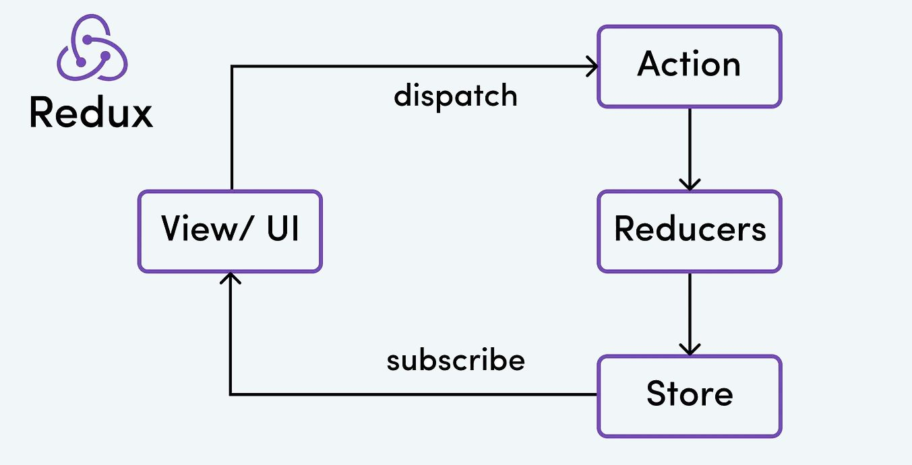
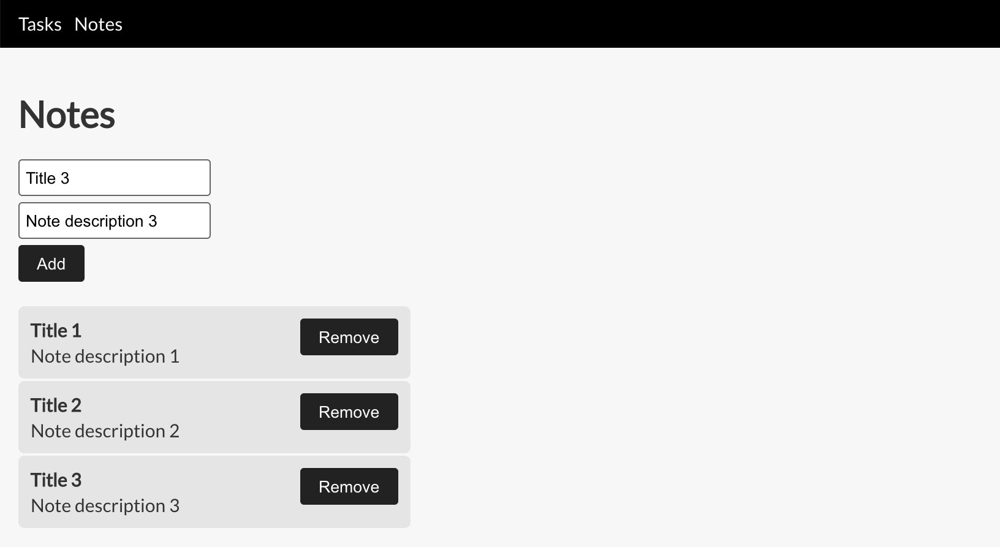

While the rumors about Redux’s demise are most likely mostly exaggerated, there is no doubt we can achieve a lot of the functionality it provides with hooks. Also, as a rule of thumb, we should avoid using as many external libraries as possible because chances are they could become deprecated in the future. While using the useReducer hook is relatively straightforward, React doesn’t provide a prescription on how to structure a relatively large application. To make matters worse, virtually every blog article on the internet recommends using a different approach.
Let’s first take a look at the Redux data flow.
First of all, it’s worth pointing out that the data flow is unidirectional. The user can trigger actions from the UI, which act on the application state via a reducer, which in turn triggers rerendering of the UI. The is aim to replicate this flow using the built in React functionality.
With hooks, React provides powerful features when writing functional components, and it’s not opinionated on how you use them. The problem is, choosing the right approach can be tricky because there are so many permutations. Developers moving from .NET WebAPI or Rails (which are very opinionated in how you name your controllers and routes) to NodeJS / Express (which imposes no restrictions on how to structure your code) will find this approach very familiar.
Another relatively new addition to React is the Context API. If you’re not familiar with what it is, it’s a way for components to avoid having to pass down props through complex component trees — a technique known as prop drilling. React’s rendering engine knows to react to changes in the context state, just as it is able to respond to changes in component state or prop changes.
- We could have different contexts per route with separate data stores for each of them.
- We could use a single context per application, and each route can keep its state in a property of the single app state object.
We’ll go with option number two because that’s what Redux does, and most developers are familiar with that approach. The aim is to create a personal organizer application that has two sections: notes and tasks. The note page and task page structure are similar, so we’ll present the code for notes as an example.
Since we plan to lay the groundwork for a complex app, we’ll assume that this application has multiple modules. Each module will have a components folder, which contains the UI code, and a store folder which contains the action creators and the reducer logic.
The reducer created with the useReducer hook works similar to a Redux reducer. It’s just a function that takes a state object and an action object, and based on that, it returns a new state object. One way of thinking about it is it’s a way of mutating state, but of course we’re not really mutate the existing state, but rather creating a new state object (immutability is one of the central tenets of functional programming).
We’ll need to create reducer actions for:
- Creating a new note.
- Removing an existing note.
- Updating an existing note.
import { NotesState, NotesAction, Note } from './types'
import { ADD_NOTE, REMOVE_NOTE, UPDATE_NOTE } from './actions'
import { v4 } from 'uuid'
export const initialNotesState: NotesState = {
notes: []
}
export function notesReducer(state: NotesState, action: NotesAction) {
switch (action.type) {
case ADD_NOTE: {
const note = {
id: v4(),
title: action.title,
description: action.description
}
return {
...state,
notes: [...state.notes, note]
}
}
case REMOVE_NOTE: {
return {
...state,
notes: state.notes.filter((note: Note) => note.id !== action.noteId)
}
}
case UPDATE_NOTE: {
return {
...state,
notes: state.notes.map((note: Note) => {
if (note.id === action.noteId) {
return {
...note,
title: action.title,
description: action.description
}
} else {
return note
}
})
}
}
default: {
return state
}
}
}Now that we have defined a reducer, we’ll want to create the equivalent of Redux’s action creators.
import { Dispatch } from 'react'
import { NotesAction } from './types'
import { AppState } from '../../types'
export const ADD_NOTE = 'ADD_NOTE'
export const REMOVE_NOTE = 'REMOVE_NOTE'
export const UPDATE_NOTE = 'UPDATE_NOTE'
export function addNote(title: string, description: string) {
return async function (state: AppState, dispatch: Dispatch<NotesAction>;) {
dispatch({
type: ADD_NOTE,
title,
description
})
}
}
export function removeNote(noteId: string) {
return async function (state: AppState, dispatch: Dispatch<NotesAction>;) {
dispatch({
type: REMOVE_NOTE,
noteId
})
}
}
export function updateNote(noteId: string, title: string, description: string) {
return async function (state: AppState, dispatch: Dispatch<NotesAction>;) {
dispatch({
type: UPDATE_NOTE,
noteId,
title,
description
})
}
}And finally, let’s have a look the types.ts file.
import { ADD_NOTE, REMOVE_NOTE, UPDATE_NOTE } from './actions'
export type Note = {
id: string
title: string
description: string
}
export type NotesState = {
notes: Note[]
}
export type NotesAction =
| { type: typeof ADD_NOTE, title: string, description: string }
| { type: typeof REMOVE_NOTE, noteId: string }
| { type: typeof UPDATE_NOTE, noteId: string, title: string, description: string }Our application also has a tasks section which has the same structure — actions, and a state reducer. Since the application uses a single data store, we need to combine both our reducers into a single one. We’ll create an appReducer.ts file for this.
type Action =
| NotesAction
| TasksAction
const initialAppState = {
tasks: initialTasksState,
notes: initialNotesState
}
function combinedReducer(state: AppState, action: Action) {
return {
notes: notesReducer(state.notes, action as NotesAction),
tasks: tasksReducer(state.tasks, action as TasksAction)
}
}Let’s try to put it all together now. We need a way for the UI to be able to call our actions and to react to changes in the application state. We’ll use a global context that can be accessed from anywhere in the application via the useContext hook that will give the calling component access to the following:
- The global state of the app.
- An execute method, which will allow it to trigger actions.
import React, { useReducer, Dispatch } from 'react'
import { AppState, ChildrenProps } from './modules/types'
import appReducer, { initialAppState, Action } from './appReducer'
export type ExecuteFunc = (state: AppState, dispatch: Dispatch<any>)
=> Promise<void> | void
export type AppContextType = {
state: AppState
execute: (action: ExecuteFunc) => Promise<void>
}
// eslint-disable-next-line @typescript-eslint/no-explicit-any
export const AppContext = React.createContext({} as any as AppContextType)
export default function AppContextProvider(props: ChildrenProps) {
const [state, dispatch] = useReducer(combinedReducer, initialAppState)
async function execute(action: (state: AppState, dispatch: Dispatch<Action>)
=> Promise<void> | void) {
try {
await action(state, dispatch)
} catch (error) {
// take appropriate action and report the error
alert('The application encountered an error.')
}
}
return (
<AppContext.Provider value={{ state, execute }}>
{props.children}
</AppContext.Provider>
)
}We’ll need to add the AppContextProvider as the root component of the application. Then in a component, we can access the application state and the execute method using the useContext hook.
const { state, execute } = useContext(AppContext)
function removeNoteClick(noteId: string) {
execute(noteActions.removeNote(noteId))
}
const notes = state.notes.notes
// rendering the notesThe source code can be found here.